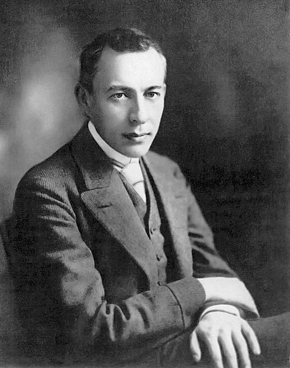
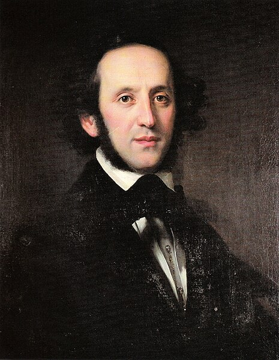

Favorite Composers
Below are a few of my favorite piano composers from various musical and time periods.
| Composer | Country of Origin | Lifetime | Musical Period | Total Compositions |
|---|---|---|---|---|
| Claude Debussy | France | 1862-1918 | Impressionist | 141 |
| Scott Joplin | United States | 1868-1917 | Modern | 44 |
| Ludwig van Beethoven | Germany | 1770-1827 | Romantic | 722 |
| Sergei Rachmaninoff | Russia | 1873-1943 | Romantic | Over 150 |
| Felix Mendelssohn | Germany | 1809-1847 | Romantic | Approximately 750 |
Claude Debussy
 Wikimedia Commons
Wikimedia Commons
Favorite pieces:
- Deux arabesques, L. 66
- Golliwog's Cakewalk (Children's Corner, L. 113)
Fun facts:
- Debussy is seen by some to be the first Impressionist composer, though he rejected the term.
- In 1983, pianist and scholar Roy Howat suggested that some of Debussy's pieces can by divided into sections that reflect that reflect the golden ratio.
Scott Joplin
 Wikimedia Commons
Wikimedia Commons
Favorite pieces:
- Maple Leaf Rag
- The Cascades
Fun facts:
- Joplin regarded ragtime as a form of classical music meant to be performed in concert halls and disdained the performance of ragtime as honky-tonk music.
- Joplin received most of his musical education from Julius Weiss, a German-born American Jewish music professor. Weiss, recognizing Joplin's talent and his family's financial difficulties, gave him piano lessons free of charge. In his later years, Joplin sent his former teacher "gifts of money when he was old and ill" until Weiss passed away.
Ludwig van Beethoven
 Wikimedia Commons
Wikimedia Commons
Favorite pieces:
- Piano Sonata No. 8 in C minor, Op. 13 "Pathetique" - III. Rondo: Allegro
- Piano Sonata No. 14 in C-sharp minor "Moonlight Sonata" - III. Presto agitato
Fun facts:
- At the age of five, Beethoven was taught by Tobias Friedrich Pfeiffer, an insomniac who often dragged young Beethoven from his bed to the keyboard for late-night lessons.
- Beethoven experienced significant hearing loss, but never became totally deaf.
Sergei Rachmaninoff
 Wikimedia CommonsFavorite pieces:
- Prelude in C-sharp minor, Op. 3, No. 2
- Prelude in E-flat Major, Op. 23, No. 6
Fun facts:
- The premiere of Rachmaninoff's first symphony was a disaster due to under-rehearsal and the possible intoxication of the conductor. Despite its poor initial reception, it is now seen as a powerful and finely-constructed piece, "achieving a genuinely tragic and heroic expression".
- Before his first tour in the United States, Rachmaninoff received offers from numerous pianon manufacturers to tour with their instruments. He chose Steinway, the only manufacturer that did not offer him money. His association with Steinway continued for the rest of his life.
Felix Mendelssohn
 Wikimedia CommonsFavorite pieces:
- Songs without Words Book 2, Op. 30, No. 1 - Andante espressivo (E♭ major)
- Songs without Words Book 5, Op. 62, No. 6 - Allegretto grazioso: Frühlingslied "Spring Song" (A major)
Fun facts:
- Mendelssohn composed the melody for the Christmas charol "Hark! The Herald Angels Sing".
- Mendelssohn revived interest in Johann Sebastian Bach's work with his performances of Bach's pieces.